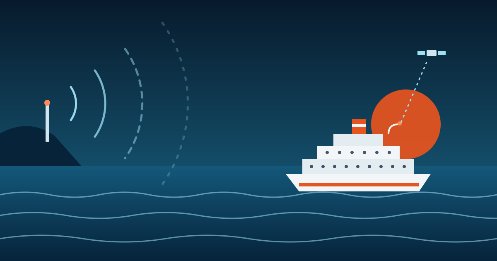
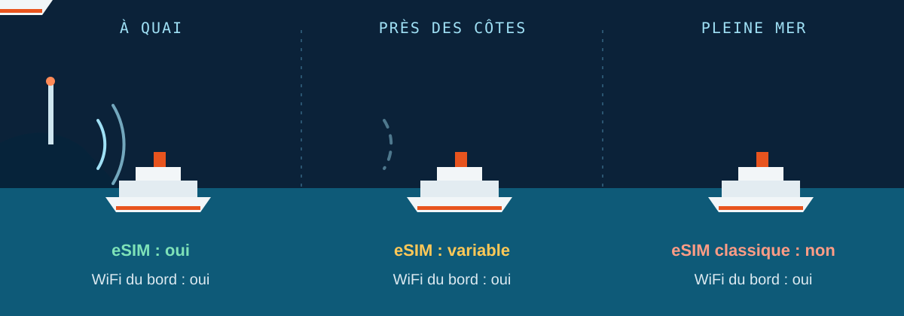
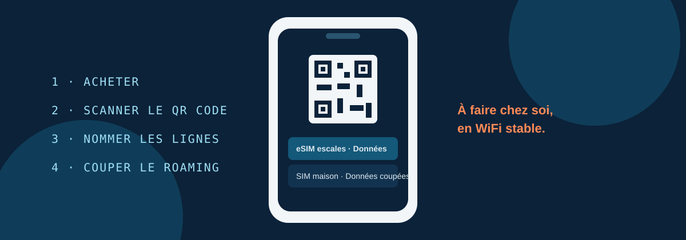

Guide connectivité en mer · 2026
Internet en croisière : quelle eSIM choisir ?
Pour avoir internet en croisière sans mauvaise surprise, il faut séparer deux situations. Pendant les escales, une eSIM de voyage fonctionne très bien et coûte peu. En pleine mer, il n'existe que deux solutions : le WiFi du navire, ou une eSIM spécialisée qui liste explicitement votre bateau. Voici comment choisir, avec les prix, les réglages et notre sélection d'offres.

La réponse en 30 secondes
- Escales et côtesPrenez une eSIM régionale (Méditerranée, Europe, Caraïbes, Asie) installée avant le départ. C'est la solution la moins chère.
- Pleine merChoisissez le WiFi du navire, réservé avant l'embarquement, ou une eSIM croisière dont la liste inclut votre navire. Une eSIM classique ne capte rien au large.
- Dans tous les casMode avion en mer, et itinérance des données coupée sur votre SIM principale. C'est ce réglage qui évite les factures à plusieurs centaines d'euros.
Une eSIM fonctionne-t-elle sur un bateau de croisière ?
Oui, mais pas partout sur le trajet. Une eSIM de voyage est un profil numérique qui se connecte aux réseaux mobiles terrestres d'opérateurs partenaires. Elle capte donc là où il y a des antennes : à quai, dans les ports et quand le navire longe une côte. Les ordres de grandeur évoqués par les fournisseurs vont d'une dizaine à une trentaine de kilomètres, selon le relief et l'équipement local.
Au large, plus d'antenne, plus de signal. Le navire dispose en revanche de son propre réseau, alimenté par satellite. Votre téléphone peut s'y connecter tout seul en roaming si vous le laissez faire, et c'est là que les factures explosent. Retenez aussi qu'une « eSIM mondiale » ne veut pas dire « fonctionne en mer ».

| Solution | À quai | Près des côtes | Pleine mer |
|---|---|---|---|
| eSIM de voyage standard | ✓ Oui | ~ Variable | ✕ Non |
| eSIM croisière spécialisée | ✓ Oui | ✓ Oui | ~ Navires listés |
| WiFi du navire | ✓ Oui | ✓ Oui | ✓ Oui, payant |
| Roaming de votre opérateur | ~ Selon forfait | ~ Risqué | ✕ Très cher |
Pour aller plus loin sur ce point précis, notre guide meilleure eSIM pour les navires de croisière détaille ce qui marche en mer et au port.
Les 4 solutions pour avoir internet en croisière
Chaque solution répond à un besoin différent. Les comparer sur le seul prix mène à de mauvais choix, parce qu'elles ne couvrent pas les mêmes moments du voyage.
| Solution | Budget indicatif | Idéal pour | Limite principale |
|---|---|---|---|
| eSIM régionale | Quelques euros à une vingtaine d'euros pour tout le voyage | Escales, excursions, cartes, messagerie | Ne capte pas en pleine mer |
| eSIM croisière spécialisée | À partir d'environ 18 € selon la zone | Un seul forfait pour la mer et les ports | Fonctionne seulement sur les compagnies et navires listés |
| WiFi du navire | Souvent 15 à 35 € par jour et par appareil | Jours de mer, télétravail, appels | Cher, débit partagé entre passagers |
| Roaming opérateur | Très variable, parfois hors de contrôle | Quelques escales dans l'Union européenne | Peut basculer sur un réseau maritime facturé hors forfait |
Pour la plupart des croisiéristes, la meilleure combinaison est simple : une eSIM pour les ports et un peu de WiFi du bord seulement les jours où vous en avez vraiment besoin. Les budgets sont des repères tirés des tarifs publiés en 2026 par les fournisseurs et les compagnies. Ils changent selon l'itinéraire et la date de réservation.
Combien coûte le WiFi du bateau, et comment payer moins ?
Le WiFi à bord s'est nettement amélioré. De nombreuses compagnies ont équipé leurs navires de la connexion satellite Starlink, c'est le cas de toute la flotte du groupe Carnival (Costa, AIDA, P&O) et d'une partie de la flotte MSC. Le débit reste toutefois partagé entre tous les passagers, il baisse donc le soir et les jours de mer.
Côté prix, trois constats reviennent chez les comparatifs :
- Le tarif est facturé par appareil et par jour, avec plusieurs niveaux (messagerie, navigation, streaming). Sur 7 nuits, la facture d'une seule personne atteint vite plusieurs centaines d'euros.
- Les prix ne sont pas affichés publiquement chez plusieurs compagnies. Vous les voyez dans votre espace de réservation, une fois la croisière achetée. Le comparatif de GigSky le signale pour Royal Caribbean, Disney et MSC.
- Acheter avant l'embarquement fait gagner environ 20 %. Chez MSC, l'achat à bord coûte en général une vingtaine de pour cent de plus que dans le planificateur en ligne.
Ne payez pas le WiFi pour toute la croisière par réflexe. Repérez les jours de mer où vous avez un vrai besoin (une réunion, un message important), achetez le forfait quand la compagnie propose une formule courte, et laissez l'eSIM gérer le reste. Si vous êtes un client fidèle, regardez aussi les minutes ou remises offertes avec votre statut.
Quelle eSIM choisir selon votre itinéraire ?
Votre itinéraire décide de tout : plus il y a d'escales rapprochées, plus l'eSIM est utile. Vérifiez toujours chaque pays d'escale dans la liste du forfait, pas seulement le nom de la région.
Croisière en Méditerranée
C'est la configuration idéale pour l'eSIM : une escale tous les un à deux jours, et des réseaux 4G/5G solides en Espagne, en Italie, en Grèce ou en Croatie. Une eSIM Europe ou Méditerranée suffit en général. Contrôlez les destinations hors Union européenne comme la Turquie, la Tunisie ou le Monténégro, qui ne sont pas toujours incluses.
Croisière dans les Caraïbes
Les grandes îles offrent une bonne couverture, les petites sont plus inégales. Prenez un forfait Caraïbes ou multi-pays qui liste vos îles une par une. Notre article meilleure eSIM pour une croisière dans les Caraïbes donne la méthode complète.
Europe du Nord et fjords
La couverture mobile est très bonne dans les villes portuaires scandinaves, y compris au fond des fjords. Entre deux ports, le signal peut disparaître : téléchargez vos cartes et billets avant de partir.
Asie du Sud-Est
Singapour, Vietnam, Thaïlande ou Malaisie : les réseaux sont rapides et peu chers. Une eSIM Asie régionale couvre souvent tout l'itinéraire. Si vous prolongez par un séjour sur place, comparez notre page meilleure eSIM pour la Thaïlande.
Traversées longues et croisières d'expédition
Sur une transatlantique, l'eSIM ne servira qu'aux escales. Pour les jours de mer, il faut le WiFi du navire, une eSIM croisière compatible, ou assumer la déconnexion.
| Profil | Stratégie conseillée | Ce que vous évitez |
|---|---|---|
| Je veux me déconnecter | eSIM régionale seule, utilisée uniquement aux escales | Payer un WiFi dont vous n'avez pas besoin |
| Je me connecte de temps en temps | eSIM pour les ports, un ou deux jours de WiFi du bord | Un forfait WiFi pour toute la croisière |
| Je télétravaille | eSIM avec gros volume, plus WiFi complet sur un navire équipé de Starlink | Compter sur les données mobiles pour des appels en mer |
| Nous partons en famille | Une eSIM par téléphone compatible, ou un forfait qui autorise le partage de connexion | Un seul téléphone qui épuise le forfait en une matinée |
Notre sélection d'eSIM pour votre croisière
Notre classement est indépendant : il repose sur les avis de voyageurs, le prix et la qualité de couverture. Voici les fournisseurs les mieux notés pour les escales, avec les codes promo MyBestSim. Retrouvez le détail dans nos meilleures eSIM et la liste complète des codes promo eSIM.
| Fournisseur | Note | Code promo | À savoir | Liens |
|---|---|---|---|---|
| Roamic | 4,9/5 | MYBESTSIM −10 % | Forfaits pays, régionaux et mondiaux, installation par QR code | Avis · Voir l'offre |
| Yesim | 4,8/5 | MYBESTSIM20 −20 % | Large choix de forfaits, support client 24 h/24 | Avis · Voir l'offre |
| Airalo | 4,6/5 | MYBESTSIM −10 % | Forfaits régionaux pour enchaîner plusieurs pays d'escale | Avis · Voir l'offre |
| Holafly | 4,4/5 | MYBESTSIM −5 % | Forfaits par zone de croisière (Méditerranée, Europe, Caraïbes, Alaska), pensés pour les ports | Avis · Voir l'offre |
Et pour la pleine mer ?
Quelques fournisseurs vendent de vraies eSIM croisière qui fonctionnent aussi au large, via le réseau satellite des navires partenaires. GigSky propose des forfaits « Croisière + Terre » à partir d'environ 18 € selon la zone, et Saily annonce une couverture sur plus de 25 compagnies, avec partage de connexion autorisé. Avant d'acheter, vérifiez trois points : la compagnie, le navire et la zone de navigation. Si l'un des trois est flou, considérez que le forfait ne marchera qu'au port. Notre guide eSIM pour la croisière et la terre compare ces solutions.
MyBestSim utilise des liens d'affiliation, sans frais supplémentaires pour vous et sans effet sur le classement.
Combien de données prévoir en croisière ?
La plupart des voyageurs surestiment leur besoin au large et le sous-estiment à terre. Le bon réflexe est de compter en Go par jour d'escale, puisque c'est là que l'eSIM travaille.
| Usage à terre | Par jour d'escale | Croisière 7 nuits, 5 escales |
|---|---|---|
| Léger : messagerie, cartes, réservations | 200 à 500 Mo | 1 à 2,5 Go |
| Standard : plus réseaux sociaux et photos | 500 Mo à 1 Go | 2,5 à 5 Go |
| Intensif : appels vidéo, partage de connexion | 1,5 à 3 Go | 7,5 à 15 Go |
Deux détails comptent autant que le volume. Prenez une validité qui couvre le jour d'embarquement et la matinée du débarquement, puis vérifiez si le forfait démarre à l'installation ou à la première connexion au réseau. Pour affiner, utilisez notre calculateur de données de voyage.
Préparer son téléphone avant d'embarquer
Tout se joue avant de monter à bord. Une fois en mer, le WiFi est saturé, le support est difficile à joindre et votre téléphone cherche un réseau tout seul.

- Vérifiez la compatibilité. Votre téléphone doit gérer l'eSIM et être débloqué. Consultez la liste des téléphones compatibles eSIM.
- Achetez et installez l'eSIM chez vous, en WiFi stable, en scannant le QR code reçu par e-mail.
- Nommez chaque ligne : « SIM maison », « eSIM escales ». Vous saurez toujours laquelle est active.
- Réglez les données : choisissez l'eSIM comme ligne de données et coupez l'itinérance des données sur votre SIM principale.
- Testez 24 à 48 heures avant le départ, pour corriger une erreur d'activation tant que le support est joignable.
- En mer, passez en mode avion, puis activez le WiFi du bord si vous l'avez acheté. Au port, désactivez le mode avion et contrôlez le nom du réseau affiché.
Téléchargez avant de partir vos cartes hors ligne, vos billets d'excursion et vos documents de réservation. Ils restent disponibles les jours sans connexion.
Les 5 erreurs qui coûtent cher en croisière
1. Laisser l'itinérance active en mer
C'est l'erreur la plus coûteuse. Votre téléphone peut s'accrocher au réseau maritime du navire, facturé hors forfait par votre opérateur. Notre article sur la facture de roaming à 900 € montre comment un simple réglage mal compris peut coûter cher.
2. Acheter le WiFi à bord au dernier moment
Le même forfait coûte environ 20 % de plus une fois embarqué. Décidez avant le départ, et consultez les conditions sur l'aide en ligne de votre compagnie.
3. Croire qu'une eSIM « mondiale » couvre la mer
Cherchez une mention explicite de croisière, de navire ou de couverture maritime. Si le fournisseur liste seulement des pays, c'est un produit pour la terre ferme et les ports.
4. Installer l'eSIM une fois à bord
Le profil se télécharge mal sur un WiFi de navire saturé. Installez et testez avant d'embarquer.
5. Supprimer le profil eSIM après l'installation
Beaucoup de profils eSIM de voyage ne peuvent pas être réinstallés une fois supprimés. Désactivez-le entre deux croisières, ne le supprimez pas.
Notre plan en trois temps pour rester connecté en croisière
Si vous ne deviez retenir qu'une méthode, la voici, dans l'ordre où elle se déroule.
Avant le départ
Préparer
Compatibilité vérifiée, eSIM régionale installée et testée, itinérance coupée sur la SIM principale, WiFi du bord réservé si besoin.
À quai
Se connecter
Mode avion désactivé, eSIM sélectionnée pour les données, cartes et messagerie disponibles pour chaque excursion.
En mer
Couper
Mode avion activé, WiFi du bord seulement si nécessaire, ou déconnexion volontaire. C'est aussi ça, les vacances.
Questions fréquentes sur l'eSIM en croisière
Une eSIM fonctionne-t-elle sur un bateau de croisière ?
Oui, mais surtout à quai et près des côtes. Une eSIM de voyage utilise les réseaux mobiles terrestres, donc elle fonctionne dans les ports et pendant les escales. En pleine mer, aucune antenne n'est à portée : seule une eSIM croisière spécialisée, qui liste explicitement votre navire, ou le WiFi du bord permet alors de se connecter.
Quelle est la meilleure eSIM pour une croisière ?
Elle dépend de votre itinéraire. Pour les escales, choisissez une eSIM régionale (Méditerranée, Europe, Caraïbes, Asie) qui couvre chaque pays visité. Pour les jours en mer, privilégiez le WiFi du navire ou une eSIM croisière dont la liste de navires inclut le vôtre. Comparez les offres, puis vérifiez les pays, la validité et le partage de connexion.
Une eSIM marche-t-elle en pleine mer ?
Une eSIM de voyage classique ne marche pas en pleine mer, faute de réseau mobile terrestre. Les eSIM spécialisées croisière peuvent s'y connecter via le réseau satellite des navires partenaires, mais uniquement sur les compagnies, navires et zones indiqués par le fournisseur. Vérifiez cette liste avant l'achat.
Le WiFi du bateau est-il plus cher qu'une eSIM ?
Oui, dans la plupart des cas. Le WiFi du bord se facture par jour et par appareil, souvent entre 15 et 35 € selon la compagnie, alors qu'une eSIM régionale pour les escales coûte de quelques euros à une vingtaine d'euros pour tout le voyage. Les deux ne rendent pas le même service : l'eSIM couvre les ports, le WiFi du bord couvre la mer.
Faut-il couper le roaming pendant une croisière ?
Oui. Coupez l'itinérance des données sur votre SIM principale et activez le mode avion en mer. Les navires diffusent un réseau cellulaire maritime auquel votre téléphone peut se connecter automatiquement, avec une facturation hors forfait élevée. Réactivez la connexion seulement à quai, sur l'eSIM prévue pour les données.
Peut-on activer une eSIM une fois à bord ?
C'est possible dans certains cas, mais déconseillé. Installer une eSIM demande une connexion stable pour télécharger le profil, ce que le WiFi du navire ne garantit pas, et le support client est plus difficile à joindre en mer. Installez et testez votre eSIM chez vous, 24 à 48 heures avant l'embarquement.
Combien de Go prévoir pour une croisière d'une semaine ?
Comptez 500 Mo à 1 Go par jour d'escale pour un usage standard (cartes, messagerie, réseaux sociaux). Pour une croisière de 7 nuits avec 5 escales, il faut environ 2,5 à 5 Go. Prévoyez deux à trois fois plus si vous partagez votre connexion ou faites des appels vidéo.
Mon numéro et WhatsApp fonctionnent-ils avec une eSIM de croisière ?
La plupart des eSIM de voyage sont limitées aux données. WhatsApp, FaceTime, iMessage et Google Maps fonctionnent via la connexion de l'eSIM quand vous avez du réseau. Pour éviter les frais, gardez les données coupées sur votre ligne principale et utilisez les applications de messagerie sur l'eSIM.
Une seule eSIM peut-elle couvrir toutes les escales ?
Oui, si le forfait est régional ou multi-pays et inclut chaque pays d'escale. Comparez la liste des pays ligne par ligne avec votre itinéraire, car des destinations hors Union européenne comme la Turquie, la Tunisie ou certaines îles des Caraïbes ne sont pas toujours incluses. Sinon, combinez une eSIM régionale et une eSIM pays.
Peut-on partager la connexion d'une eSIM avec sa famille ?
Souvent oui, mais cela dépend du fournisseur : vérifiez que le partage de connexion (hotspot) est autorisé dans les conditions du forfait. Il consomme vite des données, donc prévoyez un volume supérieur, ou une eSIM par téléphone compatible pour une famille.